3．协变微分
里奇还在张量分析(4)中引进了一种运算，后来他和列维-齐维塔称之为协变微分（covariant differentiation）。这种运算早在克里斯托费尔和利普希茨的工作(5)中已经出现过。克里斯托费尔曾经给出一种方法（第37章第4节），从包含基本形式
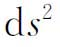
和函数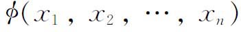
的导数的微分不变量，用这种方法可以推出一个包含高阶导数的不变量。里奇认识到这个方法对于他的张量分析的重要性并采用了它。克里斯托费尔和利普希茨处理整个形式的协变微分，而里奇根据他侧重于一个张量的全部分量的观点，对这些分量作协变微分。例如，如果
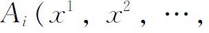
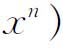
是一个向量或1阶张量的协变分量，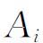
的协变导数不简单地是对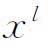
的导数，而是2阶张量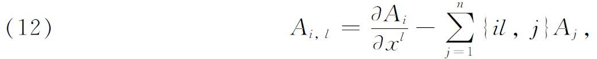
其中大括号表示第二类克里斯托费尔记号。同样地，如果
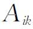
是一个2阶协变张量的分量，则它关于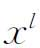
的协变导数是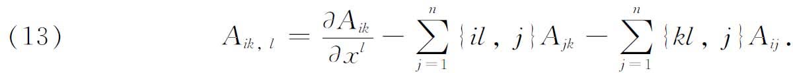
对于一个具有分量
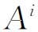
的1阶反变张量，其协变导数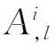
为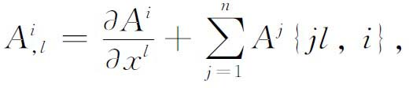
而这是一个2阶混合张量。对于具有分量
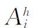
的混合张量，其协变导数是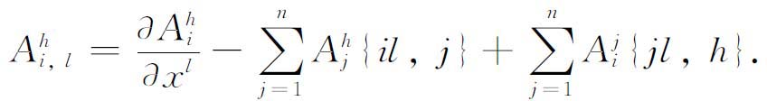
一个纯量不变量φ的协变导数是协变向量，其分量由
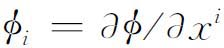
给出。这个向量叫做纯量不变量的梯度。从纯数学观点来看，一个张量的协变导数乃是协变指标高一阶的张量。这个事实是重要的，因为它使得在张量分析的范围内处理这种导数成为可能。这个事实也有几何意义。假定在平面中我们有一个常向量场，即在每点有一个向量的向量组，所有的向量有相同的大小和方向。那么任何一个向量关于一个直角坐标系表示出的所有分量也都是常数。然而，这些向量关于极坐标系的分量（一个分量沿着向径，另一个垂直于向径）却是逐点而异的，因为在这种坐标系中取分量所沿的方向是逐点而异的。如果取这些分量关于坐标r和θ的导数，则由这些导数表示的变化率，反映了由于坐标系的变化，而不是由于向量本身的任何变化所产生的分量的变化。在黎曼几何中所用的坐标系是曲线坐标系。坐标系的曲线性的影响用第二类克里斯托费尔记号（这里用大括号表示）给出。一个张量的整个协变导数，既给出由原来张量所表示的基本（underlying）物理量或几何量的实际变化率，又给出基本坐标系的变化所引起的变化率。
在欧几里得空间中
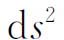
总能化简为具有常系数的平方和，由于克里斯托费尔记号为0，协变导数简化为通常的导数。还有，在一个黎曼度量中每个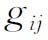
的协变导数都是0。这后一个事实是由里奇(6)证明的，因而称为里奇引理。协变微分的概念使我们容易把向量分析中早已知道的、而刚才在黎曼几何中可以处理的概念的张量推广表示出来。例如，如果
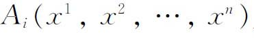
是一个n维向量A的分量，则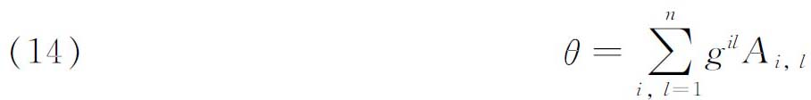
是一个微分不变量，其中
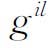
在上面已经说明过。当基本度量是在一直角坐标系中表示出时（在欧几里得空间中），除了i＝l的情形外常数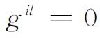
，这时协变导数和通常的导数是一致的。于是，（14）变成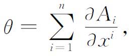
而这就是三维欧几里得空间中的所谓散度在n维欧几里得空间中的类似物。因此（14）也叫分量为
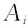
的张量的发散量。用（14）还能证明：如果A是一个数量点函数，则A的梯度的发散量为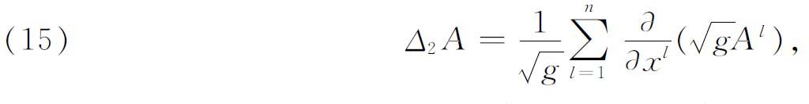
其中
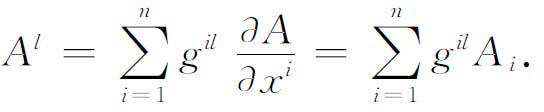
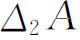
的这个表达式也就是黎曼几何中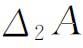
的贝尔特拉米的表达式（第37章第5节）。虽然里奇和列维-齐维塔在1901年的文章大部分篇幅致力于建立张量分析技术，但是他们主要关心的是发现微分不变量。他们提出下述一般问题：给定一个正的二次微分形式φ和任意多个与之相关联的函数S，要从φ的系数、函数组S，和系数及函数的直到一定阶数m的导数，构造出所有的绝对微分不变量。他们给出了一个完全的解。为此，只需要求出一个系统的代数不变量，这个系统由下列元素组成：基本二次微分形式φ，任意关联函数组S的直到m阶的协变导数，且当m＞1时还有一个四线性形式G4，其系数是黎曼表达式（ih，jk），以及它的直到m－2阶的协变导数。
在他们文章的结尾，指出了如何把某些偏微分方程及物理规律表示成张量的形式，以便使它们与坐标系无关。这是里奇所明确声明的目标。这样，在爱因斯坦为了把物理规律表成数学不变式这个目的而使用张量分析之前许多年，张量分析就已经用于这一目的了。